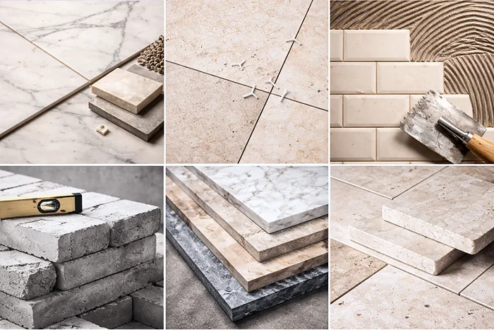

Materialval
Ett medvetet val av kvalitet
På AP Mur & Kakel arbetar vi med material som är noggrant utvalda utifrån kvalitet, funktion och lång livslängd. Vårt materialval bygger på erfarenhet, beprövade metoder och ett tydligt mål: att leverera ett hantverk som håller över tid, både tekniskt och visuellt.
Vi väljer våra material med stor omsorg och arbetar enbart med lösningar vi kan stå för långsiktigt. För dig som kund innebär det trygghet, tydlig rådgivning och ett hantverk där detaljerna får ta plats.
AP Mur & Kakel är ett självklart val för dig som söker ett professionellt utfört arbete med exklusiva material och ett resultat som håller över tid.

Kakel & klinker
Vi använder kakel och klinker som uppfyller höga krav på slitstyrka, fukttålighet och precision i mått. Dessa material ger ett stabilt och hållbart resultat, särskilt i utrymmen med hög belastning som badrum, kök och entréer.
Genom rätt material i kombination med korrekt underarbete, fall och fogning säkerställer vi ett arbete som är både funktionellt och estetiskt tilltalande.
Kalksten & natursten
Kalksten är ett exklusivt naturmaterial som ger ett tidlöst och elegant uttryck. Det är ett material som vi specialiserar oss på och som kräver erfarenhet, förståelse och ett noggrant arbetssätt. Varje sten är unik och ställer höga krav på planering, montering och ytbehandling.
Vi använder anpassade produkter och metoder för kalksten för att säkerställa rätt vidhäftning, fogning och hållbarhet. Resultatet är ett arbete med hög precision, naturlig känsla och lång livslängd, ett materialval som åldras vackert över tid.
Mur & puts
Vid mur- och putsarbeten arbetar vi med material som är noggrant utvalda för sin hållbarhet, funktion och anpassning till svenska förhållanden. Valet av rätt murbruk och puts är avgörande för att konstruktionen ska bli stabil, tålig och fungera över tid.
Vi använder material med god vidhäftning, rätt flexibilitet och hög motståndskraft mot fukt, temperaturväxlingar och slitage. Dessa egenskaper bidrar till murverk och putsade ytor som behåller sin styrka och sitt utseende under lång tid.
Genom att anpassa materialvalet efter underlag, konstruktion och användningsområde skapas ett resultat som både är tekniskt korrekt och visuellt tilltalande. Rätt material minskar risken för sprickbildning, fuktproblem och framtida underhåll.
Vårt arbetssätt bygger på att material och metod alltid samverkar. Det ger ett hållbart slutresultat där funktion, livslängd och finish är i balans.